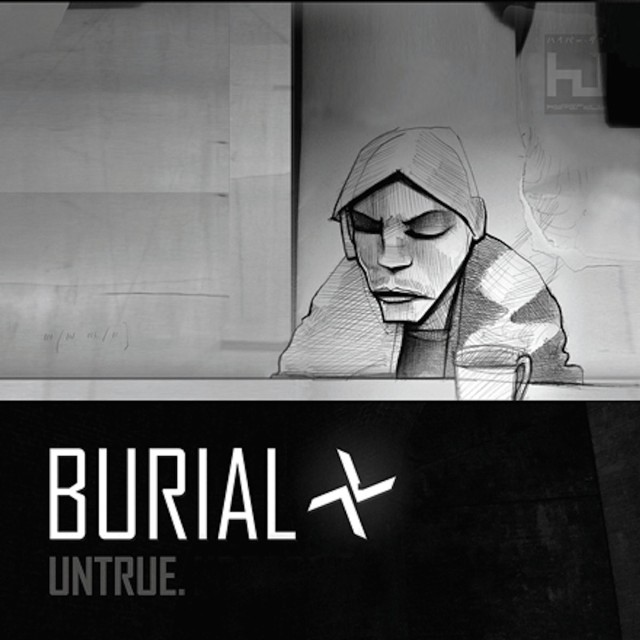

My Favorite
Albums of
All Time
Untrue
Burial

| Track # | Title | Length |
|---|---|---|
| 1 | "Untitled" | 0:46 |
| 2 | "Archangel" | 3:58 |
| 3 | "Near Dark" | 3:54 |
| 4 | "Ghost Hardware" | 4:53 |
| 5 | "Endorphin" | 2:57 |
| 6 | "Etched Headplate" | 5:59 |
| 7 | "In McDonalds" | 2:07 |
| 8 | "Untrue" | 6:16 |
| 9 | "Shell of Light" | 4:40 |
| 10 | "Dog Shelter" | 2:59 |
| 11 | "Homeless" | 5:20 |
| 12 | "UK" | 1:40 |
| 13 | "Raver" | 4:59 |
| 14 | "UK" | 1:40 |
| 15 | "Raver" | 4:59 |
Burial (William Emmanuel Bevan) is a British electronic musician
from South London, England.
Untrue is Burial's second studio album, and is combination of dusbtep,
UK garage and ambient music.
Untrue was released on November 5th, 2007 under the record label
Hyperdub.
My favorite song is "Archangel"